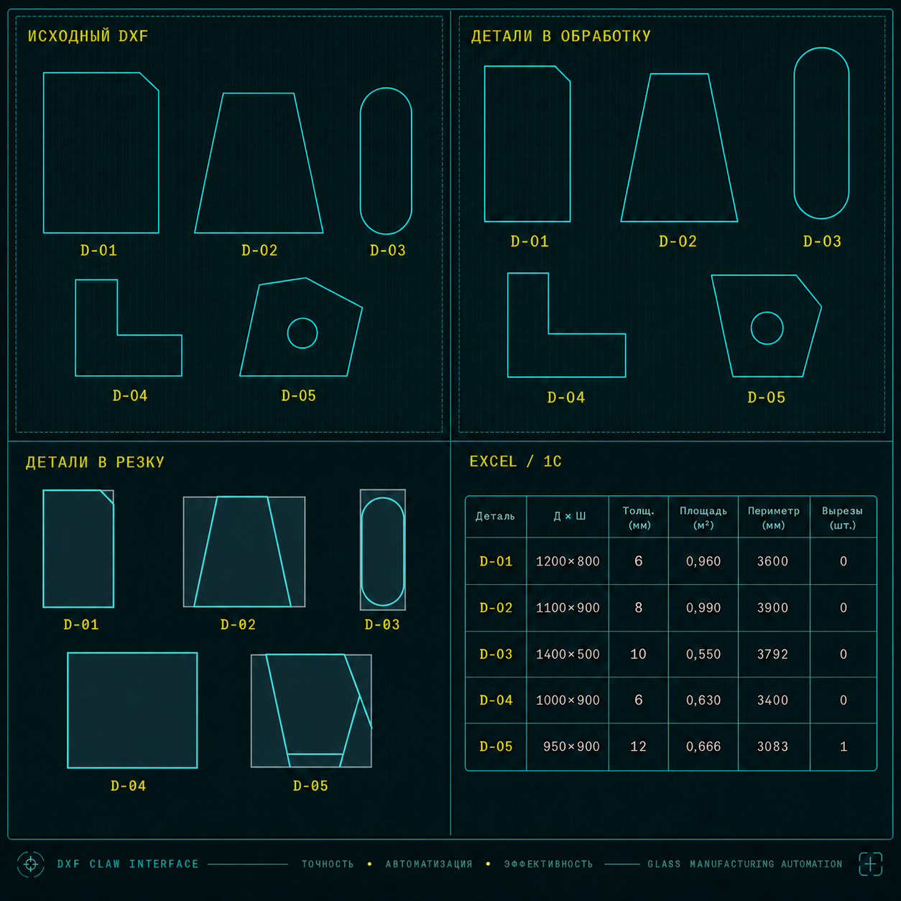

Подготовка деталей
Поиск контуров, разделение чертежа, поворот детали по длинной прямой стороне.
Автоматизирую подготовку DXF перед ЧПУ-резкой: деление на детали, поворот, припуски, подготовку файлов и Excel-выгрузку. В основе — действующий процессор DXF Claw.

DXF Claw уже закрывает типовой производственный цикл. Мы проверяем основу на вашем потоке и меняем только то, что требуется вашей технологии, оборудованию и учётной системе.
Поиск контуров, разделение чертежа, поворот детали по длинной прямой стороне.
Эквидистанты по толщине, отдельная логика для криволинейных сторон и обламывания.
Файлы для обработки и резки, именование по правилам цеха, Excel для дальнейшего импорта.
Автоматическое наблюдение за входной папкой и фоновая обработка без ручного запуска.
Нестандартная геометрия не теряется: файл изолируется, причина фиксируется в логе.
Программа и DXF остаются на компьютере заказчика. Передача файлов в облако не требуется.
Готовый процессор, на котором строится персональная программа. Это уже реализованный производственный цикл, а не концепция будущего продукта.
Базовая версия следит за входной папкой, разбирает чертёж на детали, применяет технологические правила и формирует комплект выходных файлов. Оператор подключается только к исключениям.
Определяет замкнутые контуры и сохраняет каждую деталь отдельным DXF.
Ориентирует наибольшую прямую сторону горизонтально для подготовки к станку.
Применяет настраиваемую эквидистанту по толщине стекла.
Для криволинейных сторон применяет дополнительный технологический припуск.
Выгружает габариты, толщину, площадь, периметр и количество вырезов.
Принимает современные DXF и сохраняет результат в DXF R2010.
Готовые файлы направляет в резку, нестандартные — на ручную обработку.
Фиксирует ход обработки и причину, по которой файл потребовал внимания.
Логика собирается вокруг реального процесса оператора, а не заставляет предприятие перестраиваться под универсальную коробку.
Оператор помещает исходный файл в рабочую папку.
Программа читает геометрию и выделяет детали.
Применяет поворот, припуски и правила именования.
Создаёт согласованные DXF и Excel-спецификацию.
Спорные случаи направляет оператору с пояснением.
Сначала проверяем соответствие готовой основы. После проверки становится понятно: достаточно настройки или нужна персональная сборка.
Под ваш процесс, правила и структуру данных.
Если действующий функционал уже соответствует задаче.
Никаких обещаний совместимости вслепую. Сначала результат на характерной геометрии, затем предложение по внедрению.
Вы присылаете разные типовые случаи.
Описываете припуски, станок и нужный выход.
Проверяем готовый процессор на вашей геометрии.
Фиксируем результат, доработки, срок и стоимость.
Пришлите 2–5 файлов и кратко опишите нужный результат. В ответ — оценка применимости готовой основы и план персональной автоматизации.
Для файлов: rj2biz@mail.ru